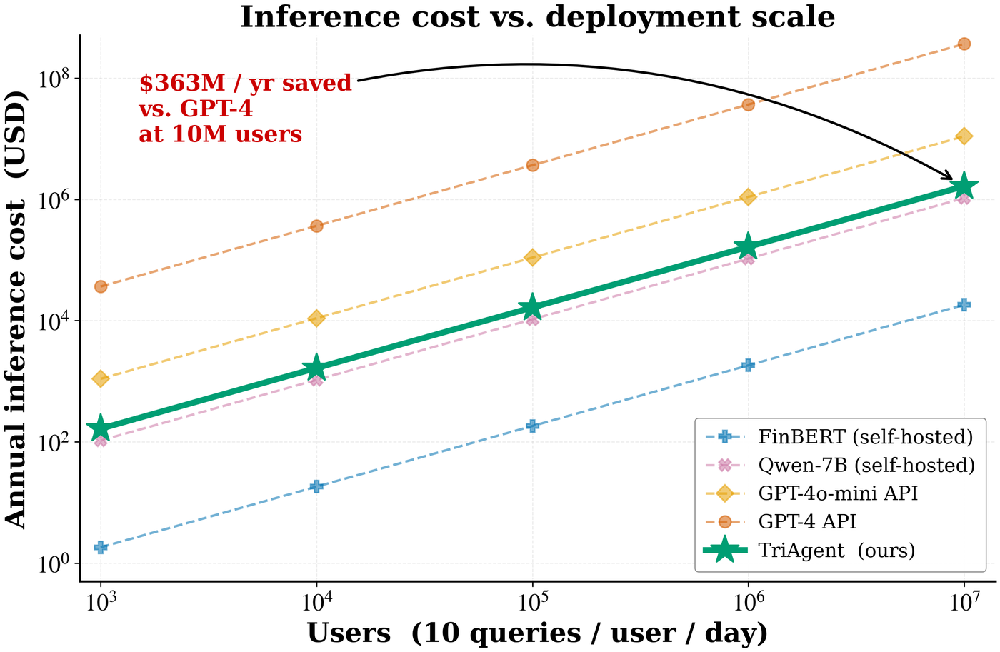
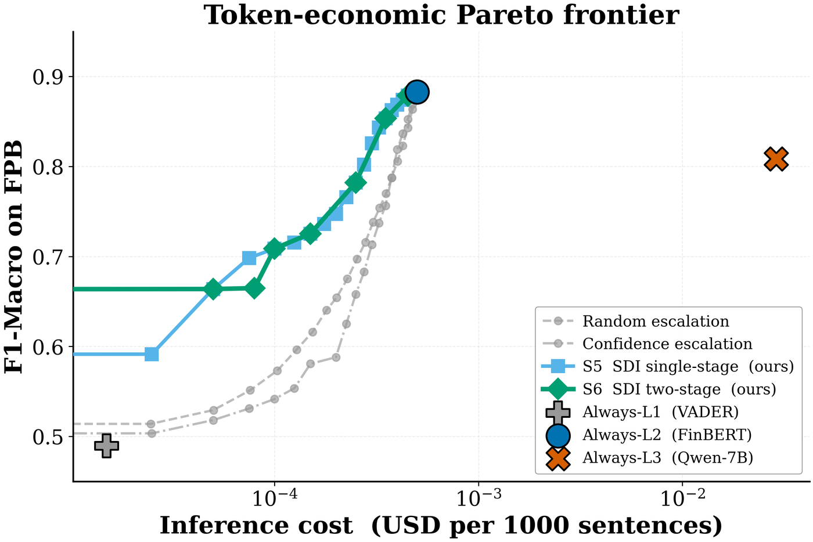

TriAgent → Reducing LLM inference cost
Reducing LLM inference cost
Most production pipelines send every query to the most capable model available. Measured on financial sentiment, only 1.5% of queries actually need it.
The cost at scale
Annual inference cost at 10 queries per user per day, using public 2025 API prices and GPU rental amortised at $0.40/hour for self-hosted models:
| Strategy | 10K users | 1M users | 10M users |
|---|---|---|---|
| Always-GPT-4 | $365K | $36.5M | $365M |
| Always-GPT-4o-mini | $11K | $1.10M | $11.0M |
| Always-Qwen-7B (self-hosted) | $1.05K | $105K | $1.05M |
| Always-FinBERT | $18 | $1.8K | $18K |
| Tier routing (TriAgent) | — | — | $1.65M |
At 10M users that is $363M/yr saved against always-GPT-4 and $9.3M/yr against always-GPT-4o-mini.
These are scenario estimates, not guarantees. They assume the cache hit rate and specialist accuracy measured in the paper carry over to the production workload, and that per-query API prices remain within an order of magnitude of 2025 published rates. A different workload mix scales the savings proportionally.

Where the queries actually go
At the Balanced operating point:
| Tier | Reference model | Share of traffic | Latency | Cost / 1k |
|---|---|---|---|---|
| L1 | word-level lexicon (VADER) | 70% | ~0.03 ms | ~$0 |
| L2 | sentence transformer (FinBERT, 110M) | 28.5% | ~1.5 ms | ~$0.0005 |
| L3 | LLM reasoner (Qwen2.5-7B) | 1.5% | 100s of ms | ~$0.11 |
Routing without a learned router
The escalation decision uses the Semantic Divergence Index — the absolute difference between two tiers' scores. That is arithmetic over outputs the pipeline already computed, which has a practical consequence: there is no router to train, no labelled routing set to collect, and nothing to retrain when you swap a model in or out.
| System | Routing signal | Training data needed | Retrain on model swap? |
|---|---|---|---|
| TriAgent | inter-tier divergence | none | no |
| FrugalGPT | learned scorer confidence | labelled examples | yes |
| RouteLLM | learned preference model | human preference pairs | yes |
The accuracy question
The intuition that the biggest model is the most accurate does not survive measurement here. On Financial PhraseBank:
| Model | Macro-F1 | Bootstrap 95% CI | Relative cost |
|---|---|---|---|
| FinBERT (110M) | 0.883 | [0.873, 0.893] | 1× |
| Qwen-7B | 0.809 | [0.796, 0.820] | ~200× |
The confidence intervals do not overlap. A 110M-parameter specialist is statistically better than a 7B general-purpose LLM on this task, at roughly 1/200th the cost — which puts the always-LLM policy off the Pareto front entirely.

Which tier can you drop?
| Configuration | Macro-F1 | Cost / 1k | Verdict |
|---|---|---|---|
| L1 + L2 + L3 (full) | 0.88 | $0.0006 | baseline |
| L1 + L2 (drop the LLM) | 0.70 | $0.00008 | 7.5× cheaper, 1.8 pp behind |
| L1 + L3 (drop the encoder) | −13 pp | — | catastrophic |
The specialist is the irreplaceable tier; the LLM is the most expendable. If you are choosing where to spend engineering effort, fine-tune the domain encoder before you upgrade the reasoner.
Accuracy is not the only thing that pays
On a 20-ticker trading back-test the ordering is not what the F1 table predicts:
| Strategy | Sharpe | Return % |
|---|---|---|
| SDI single-stage routing | 3.50 | 3.4 |
| SDI two-stage routing | 2.90 | 2.8 |
| Always-VADER | 1.51 | 2.0 |
| Always-FinBERT | 1.36 | 0.8 |
| Always-Qwen-7B | 0.11 | 0.3 |
The most expensive policy is the worst on a risk-adjusted basis. And always-VADER beats always-FinBERT on Sharpe despite far worse F1 — classification accuracy and downstream value are only loosely coupled.
Before you adopt this
The approach depends on your mid-tier specialist being well calibrated. Where it is not, it performs worse than doing nothing: on TFNS, where FinBERT collapses to F1 0.66, the critic protocol drops to 0.65 against the LLM's own 0.76. Run the one-shot check described on the critic plateau page before committing.